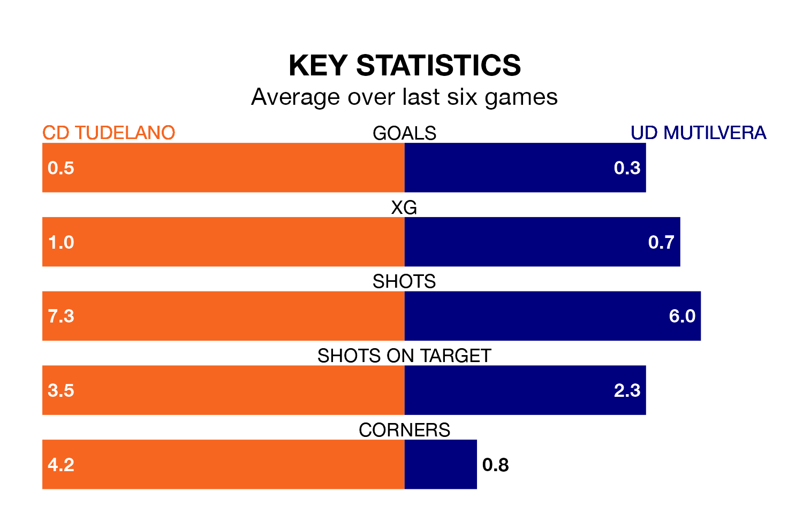

CD Tudelano and UD Mutilvera both come into Sunday's kick-off at the Estadio Municipal Ciudad de Tudela in poor form, having picked up two and four points respectively in their last six games.
Tudelano have drawn two and lost four of the last six, while Mutilvera have taken one win and one draw.
With nine goals in 18 games so far this season, Mutilvera are the league's joint-second-lowest scorers with 0.5 goals per game. And they are conceding more than average, letting in 25 goals at a rate of 1.4 per game.
Tudelano, meanwhile, are above average scorers, with 1.4 goals per game, compared to a league average of 1.1. They have conceded 1.1 goals per game.
In the last 10 years, Tudelano and Mutilvera have played each other on seven occasions. They won two each, and they drew three times.
On average, Tudelano scored 0.6 goals and Mutilvera 0.9 in those matches.
Their last meeting was on September 9, when they played out a 0-0 draw.
The visitors are 14th in the table after 18 games, of which they have won four and drawn five, earning 17 points.
The home team are six places ahead of Mutilvera in eighth, with seven wins and six draws putting them on 27 points.
Tudelano's last match was on January 14, a 0-0 draw against Real Zaragoza B.
Mutilvera lost 2-0 against CD Calahorra last time out, on January 13.
Updated: 13:09 (UTC), 17/01/24